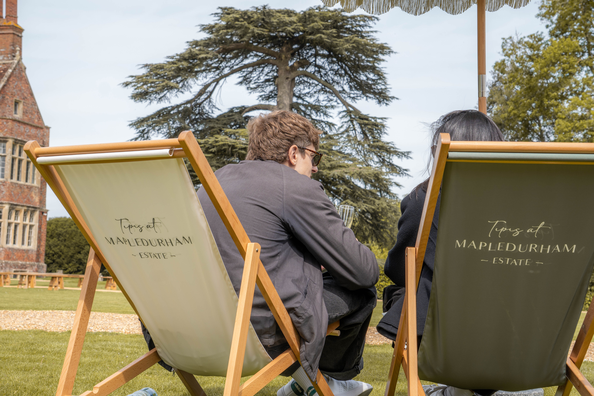
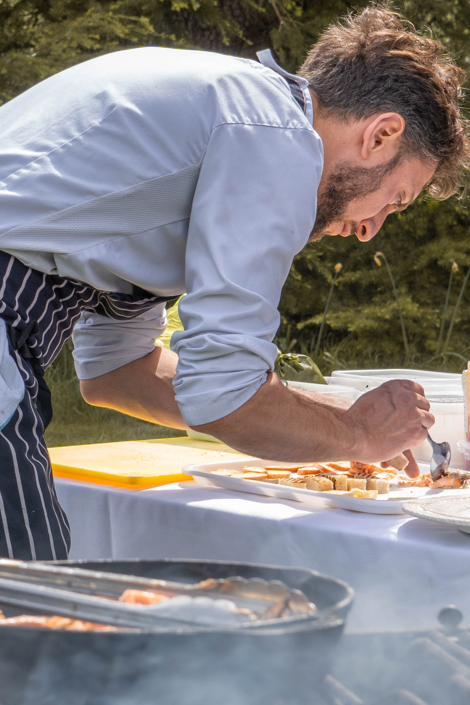
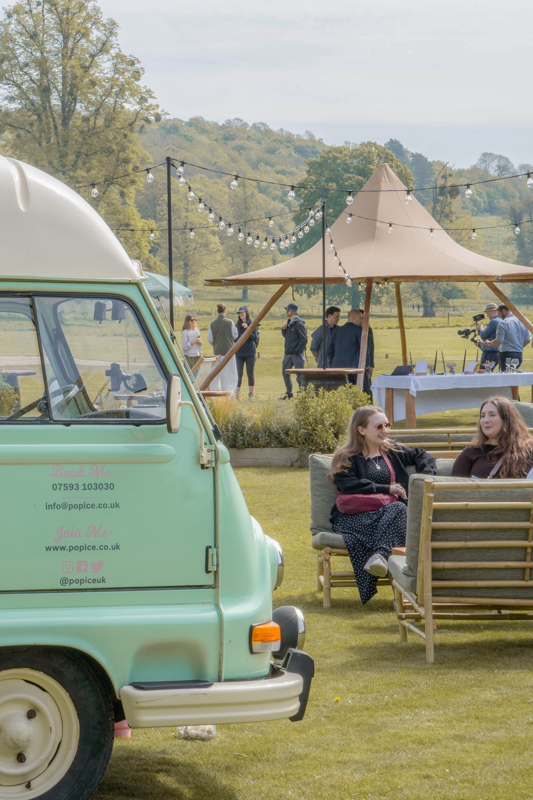
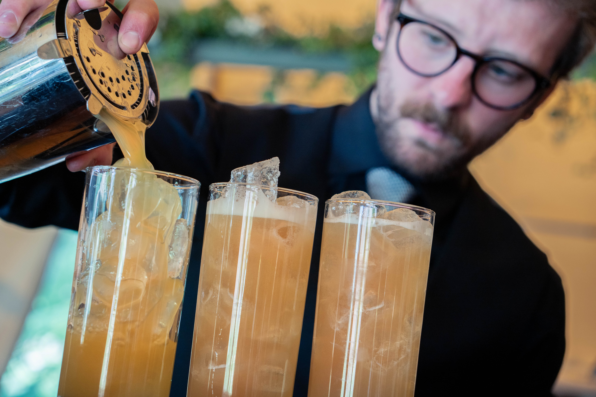

Brand & Spaces
A premium spatial and architectural showcase framework for high-end event structure suppliers, Tipis at Mapledurham. The photography emphasizes the interaction between towering canvas elements, sprawling river valley geography, and warm interior lighting landscapes as day turns to evening.



